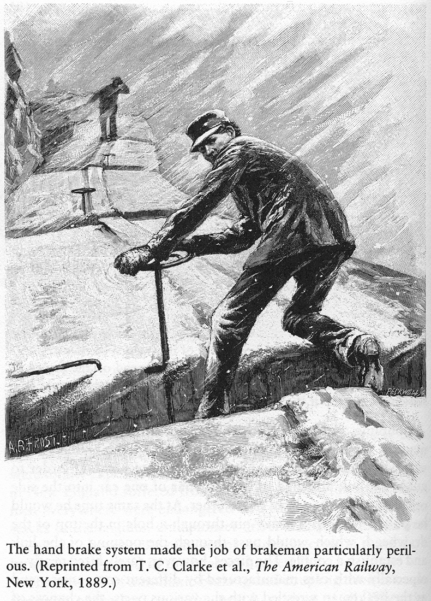
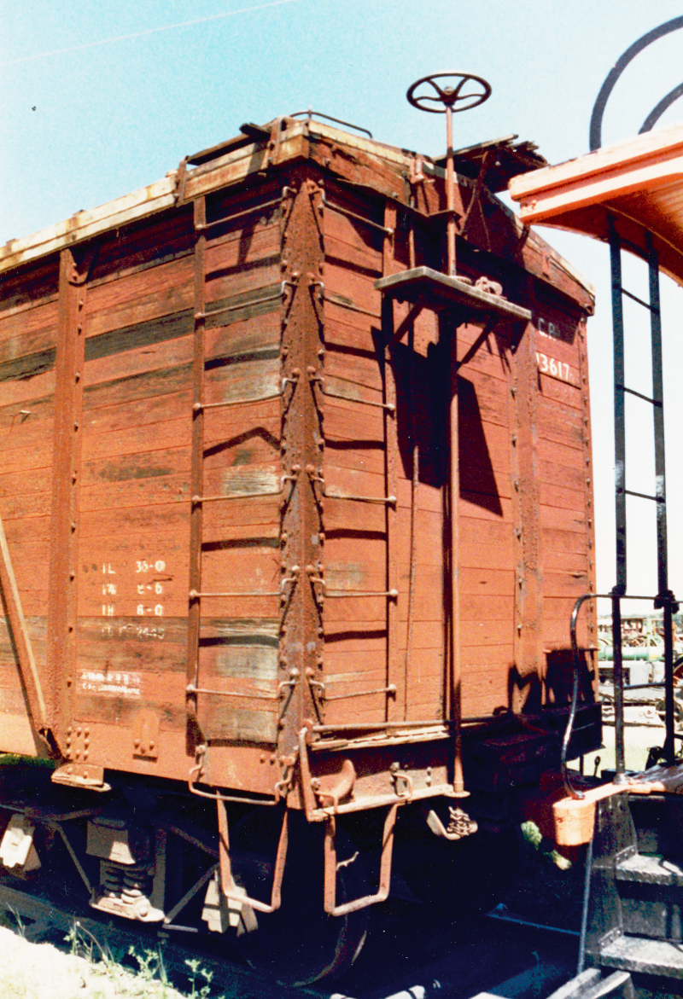
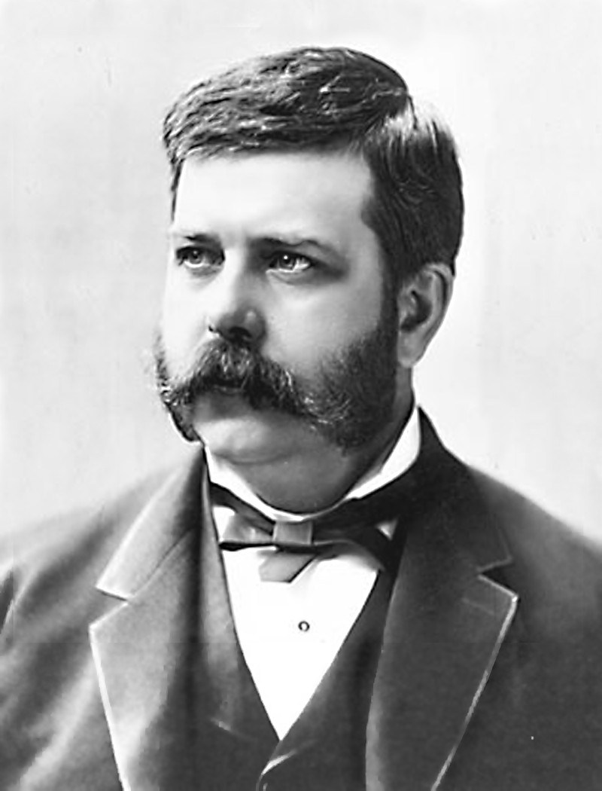
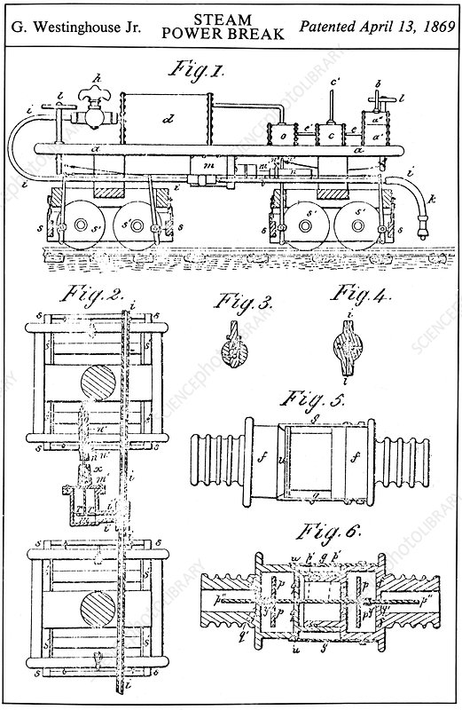
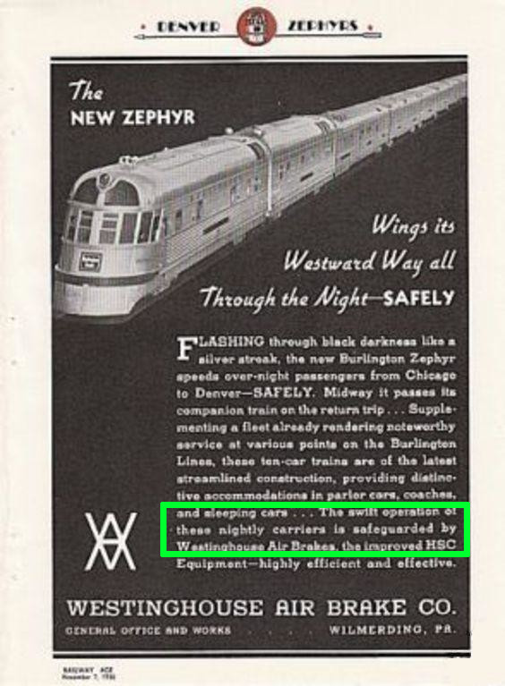

نمای کلی از تمام اسلایدهای ارائه و ساختار مباحث مختلف زبان راست.
معرفی زبان برنامهنویسی Rust
حسن کریمی
بهار 1403
خوشآمدگویی و معرفی ارائه: زبان برنامهنویسی راست، اهداف طراحی، ایمنی حافظه بدون زبالهروب و همزمانی بدون ترس.
- داستان ترمز قطار
- مبانی پایه Rust — انواع، مالکیت، وامگیری، طول عمر
- مباحث پیشرفته — خطا، Trait، Generic، همزمانی، Async
- شیگرایی در Rust
- توسعه وب با Rust
- مقایسه با Java، Go، C/C++
- حواشی — لینوکس، NSA، منحنی یادگیری
- الگوهای طراحی در Rust
مرور سرفصلهای جلسه: داستان انگیزاننده، مبانی، مفاهیم پیشرفته، شیگرایی، وب، مقایسه با سایر زبانها، حواشی و الگوهای طراحی.
داستان ترمز قطار
شروع با یک تمثیل تاریخی: داستان اختراع ترمز هوایی قطار و مقایسه آن با انقلاب ایمنی در برنامهنویسی سیستمها.
رشد انفجاری خطوط آهن آمریکا در قرن نوزدهم و افزایش چشمگیر حوادث مرگبار ناشی از سرعت و فقدان ترمز ایمن.


ترمزبانها در شرایط خطرناک دستی واگنها را متوقف میکردند که به مرگومیر فراوان منجر میشد.

## جورج وستینگهاوس
### 1846 - 1914
### مخترع و کارآفرین
معرفی جورج وستینگهاوس: مخترع ترمز بادی در سال ۱۸۶۹ که ایمنی را سیستمی و خودکار کرد.

## ترمز بادی قطار
### 1869
### کنترل توسط هوای کمپرس شده از داخل لوکوموتیو
### شبکه بهم پیوسته از لولههای هوا
### ترمز همزمان همه واگنها
### طراحی Safe Failure
مکانیزم طراحی fail-safe: اگر لولهای بشکند، هوا تخلیه شده و قطار خودکار متوقف میشود. مشابه ایمنی زمان کامپایل در راست.
«میگی که با باد میتونی قطار رو نگه داری؟»
کرنلیوس وندربیلت، مالک خط آهن سنترال نیویورک
مقاومت اولیه صنعتگران در برابر فناوری جدید: وندربیلت ابتدا ایده ترمز با هوا را به تمسخر گرفت.

### عملکرد سریع این قطار توسط ترمزهای بادی وستینگهاوس محافظت میشود
تبلیغات قطارهای ایمن؛ ترمز وستینگهاوس به یک استاندارد غیرقابل چشمپوشی تبدیل شد.
«آنها [کمسیون راهآهن] فکر می کردند که این به نوعی یک امر ضروریه، که به طور طبیعی اتفاق میافتد و برخی از
مردان کشته میشوند.»
لورنزو استفن کافین، کمیسر راه آهن آیووا
دیدگاه رایج پیشین: مرگ ترمزبانان امری اجتنابناپذیر پنداشته میشد، درست مانند پذیرش باگهای حافظه در C و C++.
1893
قانون تعبیه اسباب ایمنی راه آهن
قانون ۱۸۹۳: تصویب اجباری شدن اسباب ایمنی و ترمزهای خودکار در سطح فدرال.
1900
اجرای کامل قانون
اجرای کامل در سال ۱۹۰۰: حوادث به صفر نزدیک شد. در دنیای نرمافزار نیز مهاجرت به زبانهای ایمن به یک الزام تبدیل شده است.
Rust Basic
ورود به بخش مبانی زبان راست: معرفی سیستم نوعها، مالکیت، ارجاعها، قوانین وامگیری و طول عمر.
- اعداد صحیح со علامت:
i8, i16, i32, i64, i128, isize
- اعداد صحیح بیعلامت:
u8, u16, u32, u64, u128, usize
- اعداد اعشاری:
f32, f64
- منطقی:
bool — true یا false
- کاراکتر:
char — ۴ بایت، Unicode
- رشته ثابت:
&str — برش رشته
- رشته پویا:
String — رشته روی heap
- تاپل:
(i32, bool, f64)
- آرایه ثابت:
[T; N]
- بردار پویا:
Vec<T>
- ساختار:
struct Point { x: f64, y: f64 }
- شمارش:
enum Direction { North, South }
- نوع واحد:
() — unit type
let x: i32 = 42;
let pi: f64 = 3.14;
let name: &str = "Rust";
let arr: [i32; 3] = [1, 2, 3];
let tup: (i32, bool) = (10, true);
سیستم تایپهای غنی و صریح در راست؛ اندازه دقیق انواع عددی، ویژگیهای کاراکتر ۴ بایتی و تمایز String پویا و &str ثابت.
مالکیت مکانیزم اصلی Rust برای مدیریت حافظه بدون Garbage Collector است.
- قانون ۱: هر مقدار یک مالک دارد
- قانون ۲: در هر لحظه فقط یک مالک وجود دارد
- قانون ۳: وقتی مالک از scope خارج شد، مقدار drop میشود
let s1 = String::from("hello");
let s2 = s1; // s1 منتقل شد (move)
// println!("{}", s1); // ❌ خطا — s1 دیگر معتبر نیست
let s3 = String::from("world");
let s4 = s3.clone(); // کپی عمیق — هر دو معتبرند
println!("{} {}", s3, s4); // ✅
انواع Copy مانند i32 و bool بهجای انتقال، کپی میشوند.
سه قانون طلایی سیستم مالکیت راست؛ حذف نیاز به Garbage Collector از طریق آزادسازی قطعی حافظه در انتهای scope.
ارجاعها اجازه میدهند بدون انتقال مالکیت به مقدار دسترسی داشته باشیم.
fn length(s: &String) -> usize {
s.len() // s قرض میگیریم، مالکیت نمیگیریم
}
fn main() {
let s = String::from("سلام");
let len = length(&s); // &s یعنی ارجاع به s
println!("طول: {} — s هنوز معتبر است: {}", len, s);
}
&T — ارجاع غیر قابل تغییر (immutable reference)&mut T — ارجاع قابل تغییر (mutable reference)- ارجاعها همیشه به دادهی معتبر اشاره میکنند — بدون dangling pointer
مفهوم ارجاع با & و دسترسی خواندنی بدون انتقال مالکیت؛ تضمین عدم آزادسازی داده توسط ارجاعگیرنده.
در هر لحظه یا:
- چندین ارجاع
&T (خواندنی)
- یا یک ارجاع
&mut T (نوشتنی)
ارجاعهای mutable و immutable نمیتوانند همزمان وجود داشته باشند.
let mut v = vec![1, 2, 3];
// ✅ چند ارجاع خواندنی
let r1 = &v;
let r2 = &v;
println!("{:?} {:?}", r1, r2);
// ✅ یک ارجاع نوشتنی
let r3 = &mut v;
r3.push(4);
// ❌ اشتباه: همزمان mutable و immutable
// let r4 = &v;
// r3.push(5);
قانون اصلی وامگیری: یا بینهایت ارجاع خواندنی یا فقط یک ارجاع نوشتنی در هر بازه زمانی. جلوگیری کامل از Data Race.
Lifetime تضمین میکند که ارجاعها هیچوقت از دادهی اصلی دوام بیشتری ندارند (dangling reference نداریم).
// 'a: هر دو ارجاع ورودی باید حداقل تا 'a زنده باشند
fn longest<'a>(x: &'a str, y: &'a str) -> &'a str {
if x.len() > y.len() { x } else { y }
}
fn main() {
let s1 = String::from("برنامهنویسی طولانی");
let result;
{
let s2 = String::from("Rust");
result = longest(s1.as_str(), s2.as_str());
println!("طولانیتر: {}", result); // ✅
}
// println!("{}", result); // ❌ s2 از scope خارج شده
}
اکثر اوقات کامپایلر lifetime را خودش استنتاج میکند (lifetime elision).
مفهوم طول عمر و نحوه اطمینان کامپایلر از زنده بودن داده؛ حل قطعی مشکل ارجاعهای سرگردان (Dangling References).
در Rust تقریباً همه چیز یک expression است و مقدار برمیگرداند.
// if بهعنوان expression
let x = 5;
let msg = if x > 0 { "مثبت" } else { "منفی یا صفر" };
// بلوک بهعنوان expression (آخرین خط بدون ;)
let y = {
let a = 3;
let b = 4;
a * a + b * b // مقدار بازگشتی: 25
};
// match بهعنوان expression
let grade = match y {
25 => "عالی",
10..=24 => "خوب",
_ => "نیاز به تلاش بیشتر",
};
println!("{}", grade);
راست زبانی عبارتمحور است؛ عبارات if، match و بلاکها مقدار بازمیگردانند که منجر به کدی تمیز و خوانا میشود.